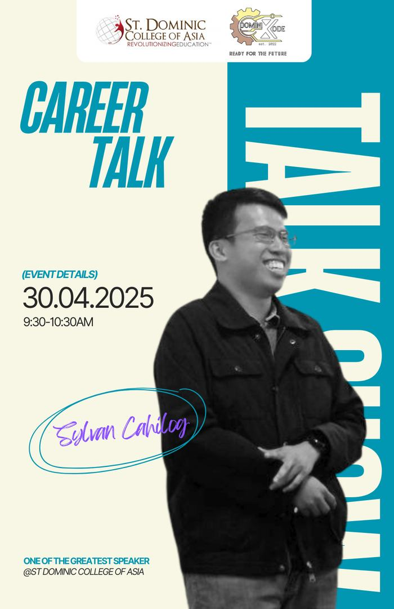
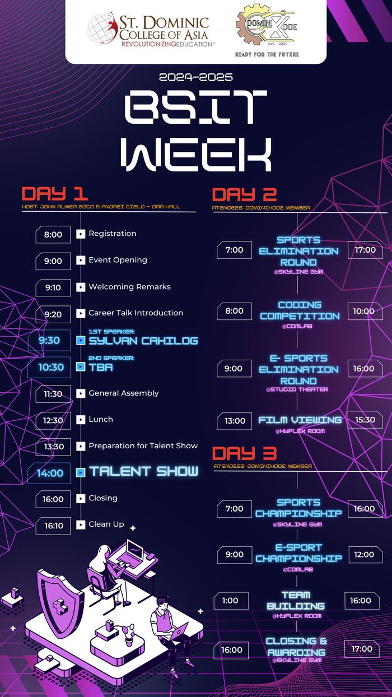
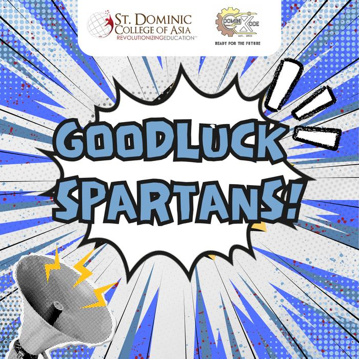
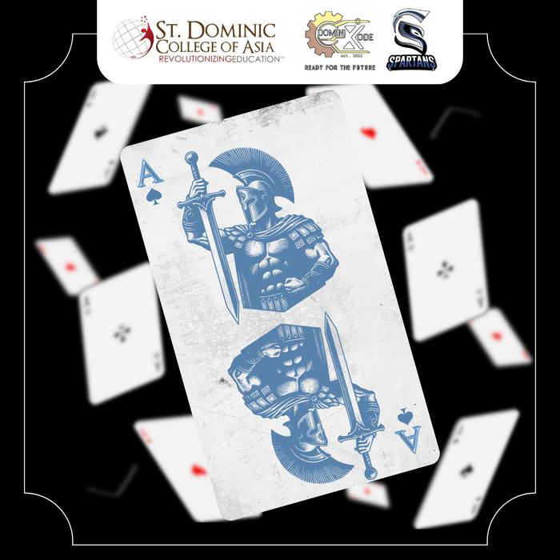

Diagnose before prescribing
Understand the user, the system, and the constraint before choosing a fix.
Information Technology · Cavite, Philippines
I’m Daniel Nadal, an Information Technology student working across technical support, database fundamentals, and front-end development. I document systems clearly, troubleshoot methodically, and build interfaces that explain themselves.
Portfolio · 2026
01 Academic profile
BS Information Technology · 2023—2026
Quiet Systems is the principle behind my practice. Technology should reduce friction, not relocate it. I approach support as diagnosis, data as stewardship, and interfaces as communication.
My background combines front-line customer operations with academic work in systems analysis, database management, and software development. That mix has taught me to translate technical problems into clear decisions — and to document the fix so the next person does not have to start over.
See how that looks in practiceBS Information Technology · Class of 2026
Industry certifications earned
Completed Cisco and Oracle courses
First-place competition award
Understand the user, the system, and the constraint before choosing a fix.
Clear records turn individual effort into organisational memory.
Interfaces should reduce cognitive load, not add another manual.
02 Technical expertise
Support · Data · Front end
The work is often the reliable middle: resolving issues accurately, keeping records trustworthy, and leaving interfaces easier to use than they were found.
Front-line troubleshooting across phone, chat, and email; account and subscription support; hardware and software diagnostics; and escalation notes that preserve the details the next team needs.
Relational database fundamentals, clean records, basic queries, and reporting. I apply consistent data practices so information remains findable, accurate, and usable by other people.
Semantic HTML, responsive CSS, and accessible layout. I turn a visual direction into a maintainable interface, with attention to performance, readability, and real device behaviour.
Windows · Hardware diagnostics · Ticket documentation · Remote troubleshooting
Relational databases · SQL fundamentals · Data modelling · Records management
HTML5 · CSS3 · Responsive design · Accessibility · Git fundamentals
Requirements analysis · User flows · Project coordination · UI/UX design
03 Projects
Academic · Individual · Team
Selected academic work with my specific contribution stated plainly. Supporting diagrams and evidence are included where available.
IoT project · Completed
CompletedA dining plate with embedded load sensors that records food weight and synchronises it with a mobile application. The system removes manual food logging, reduces unit-conversion errors, and makes portion tracking easier to sustain.
As project manager and UI/UX lead, I coordinated scope and task planning, defined the logging and portion-review user flow, shaped the dashboard interface, and aligned hardware requirements with the software team.
The plate and application are built and working together: the load cell reads weight through the HX711 and ESP32, and each reading is stored and presented for portion review. The project established the sensing and logging foundation that the separate capstone project below builds on.
Capstone project · Team of five
Documentation completeA Bluetooth-enabled food scale paired with a Progressive Web App. The scale measures each serving, the app calculates its nutritional value, records eating habits over time, and returns personalised dietary suggestions with informational health-risk indicators.
I designed the interface and user flows for the PWA, built the front-end screens that present weight, nutrition, and history, and contributed the research that shaped the dietary-analysis features.
The capstone is a related but separate build from the IoT smart plate above. The IoT project proved the sensing and logging flow; the capstone extends that idea into a team-built scale and PWA with behaviour-aware analysis.
A single-page portfolio built around a continuous colour field, responsive navigation, theme switching, and accessible motion. The project demonstrates semantic HTML, modern CSS layout, and progressive enhancement without a framework.
Introductory network simulation exercises covering device setup, connectivity testing, and basic network behaviour in Cisco Packet Tracer.
Oracle Academy coursework covering Java syntax, control flow, methods, and object-oriented fundamentals, completed through a final examination.
Applied database exercises in tables, relationships, records, and query logic, supported by the Certiport Information Technology Specialist — Databases certification.
The featured IoT project above: a connected plate and application for automatic food-weight logging and portion review.
04 Professional experience
Bacoor, Cavite · 2023—2026
Two environments, one throughline: stay accurate, communicate clearly, and keep the operation moving.
Teleperformance
GoodHands Water Specialist
05 Credentials
Education · Certification · Courses
Education
Saint Dominic College of Asia
2023 — 2026
Coursework in process design, project management, database management, systems analysis, and software development.
Download full résuméIndustry certifications
05Course completions
0306 Recognition
Achievements · Competitions · Awards
Recognition is listed only where it can be supported by a certificate, academic record, or project documentation.
Certiport and Microsoft credentials in databases, HTML and CSS, artificial intelligence, Word, and PowerPoint.
Cisco Networking Academy: IoT and Packet Tracer. Oracle Academy: Java Foundations.
DominiXode IT Week competition, St. Dominic College of Asia.
Officership covering announcements, programme graphics, and page engagement.
Project Manager and UI/UX lead for the AI-Integrated IoT Smart Plate.
Competition · 1st place
Held during IT Week 2023 under the theme “Unleashing Your Vision of Tomorrow: Soaring High Beyond 20.” The competition recognised first-place performance alongside teamwork, technical skill, and sportsmanship.
Certificate issued by DominiXode · photograph on file
07 Leadership
Project teams · Student organisation
Two kinds of responsibility: coordinating the technical work of a project team, and representing a student organisation through the material it publishes.
AI-Integrated IoT Smart Plate
Responsible for scope and task planning, user-flow definition, interface design, and coordination between the hardware and software workstreams.
DominiXode · St. Dominic College of Asia
Produced the organisation’s creative public materials — event announcements, programme graphics, and engagement posts — for page activity and BSIT Week 2024–2025.
Selected design work
DominiXode · 2024—2025



Four graphics produced for the organisation’s public page. Source files are retained by DominiXode.
08 The next step
I’m seeking an entry-level IT role in technical support, data operations, or front-end development. If my background fits a role on your team, I’d like to hear from you.
dnadaleduc@gmail.com